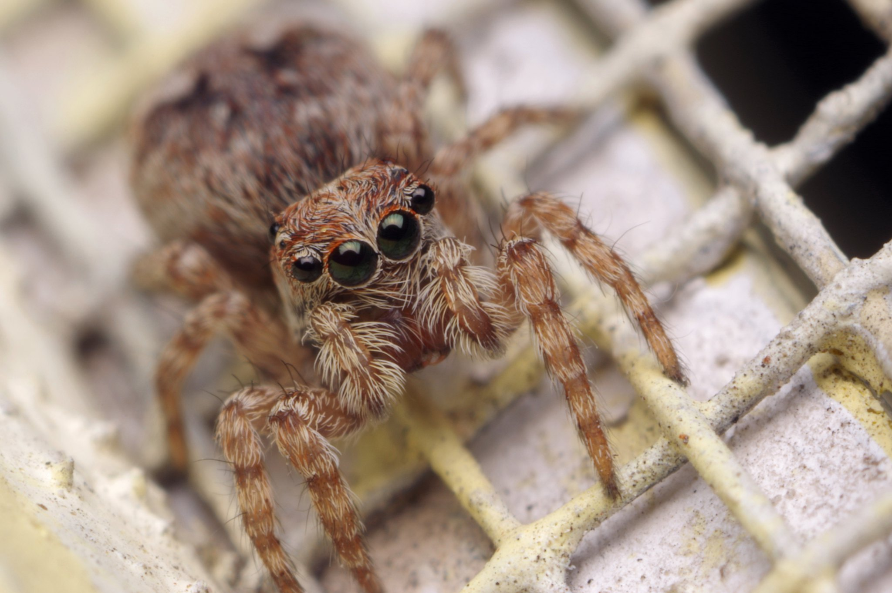

Spiders

image by Pascal Gaudette / doundounba on Flickr
Jumping Spiders
Jumping spiders (family Salticidae) are often considered the friendliest-looking spiders in the world. Unlike many spiders that rely on webs to catch food, jumping spiders actively hunt by stalking insects and then making impressive leaps to capture them. Their large forward-facing eyes give them some of the best vision of any spider, and they often appear curious when they turn to look at people. These tiny hunters are completely harmless to most humans and are valuable natural pest controllers, helping keep populations of flies, mosquitoes, and other insects in check. [fws.gov], [rkwalton.com]
Image suggestion: Close-up macro photograph of a colorful jumping spider showing its large front eyes while perched on a leaf.
Yellow Garden Spiders
The yellow garden spider (Argiope aurantia) is one of North America's most striking spiders. With its bright yellow and black markings and its large circular web, it is easy to spot in gardens, meadows, and backyards. These spiders spend much of their time waiting patiently in their webs for flying insects such as flies, grasshoppers, and mosquitoes. Despite their intimidating size, yellow garden spiders are not aggressive toward people and their venom is used primarily for subduing insect prey. They are excellent neighbors for gardeners because they help control many common pest insects. [nwf.org], [nwlfd.org]
Image suggestion: A female yellow garden spider sitting in the center of its web with the characteristic zigzag silk pattern visible.
Crab Spiders
Crab spiders (family Thomisidae) are masters of camouflage. Many species hide among flowers, where they patiently wait for insects to land nearby. Instead of spinning webs to catch prey, they ambush insects using their powerful front legs. Some species can even gradually change color to match the flowers they live on, making them nearly invisible. Although they may look unusual because of their crab-like stance and sideways movement, these spiders pose little danger to people and play an important role in controlling insect populations. [britannica.com], [bugswithmike.com]